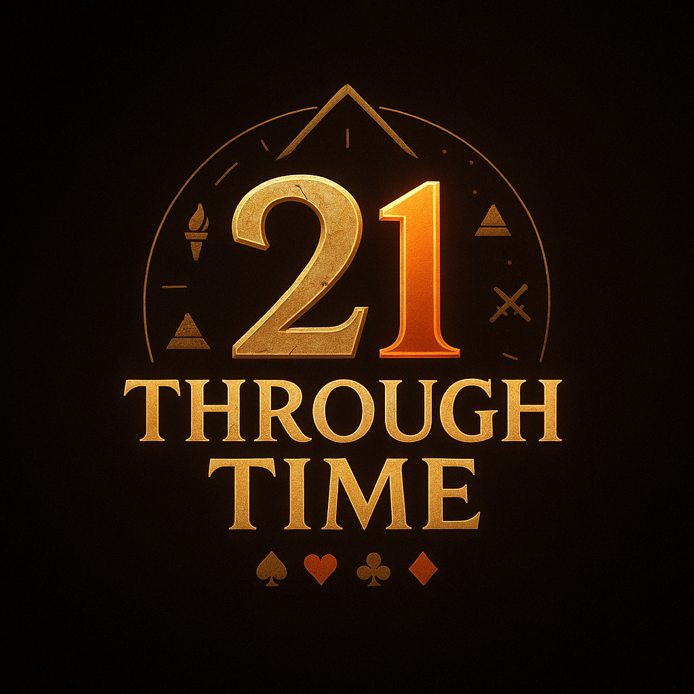

21 Through Time
Blackjack travels across eras — master chance from stone to neon.
Game Design: David Donato ✨
Game Development: David Donato
Art & Visuals: Steven Donato & Damien Bui
Music & Sound: Steven Donato & Christian Ortisi
Playtesters: David Donato, Steven Donato, Christian Ortisi & Damien Bui
Christoffer Moe Ditlevsen / Clima / courtesy of www.epidemicsound.com
Derek Fiechter & Brandon Fiechter / Cave Paintings / Prehistoric Times